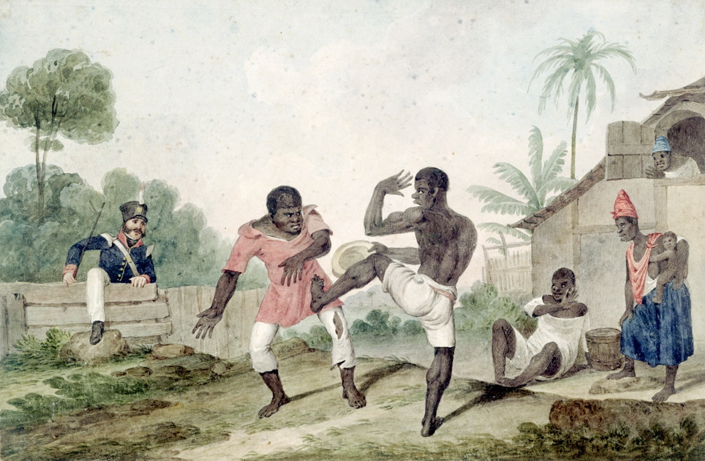

Uma das primeiras dúvidas que surgem, quando se fala em capoeira, é o significado. Afinal, o que é capoeira: uma luta, uma dança, uma mistura de música, luta e dança? A capoeira surgiu como resposta a violência a qual os escravizados eram submetidos em tempos coloniais e imperiais no Brasil. A partir de golpes e movimentos corporais ágeis, a luta permitia que eles se defendessem das brutais perseguições dos capitães do mato, cuja atribuição era capturar quem havia fugido. Para não levantarem suspeitas – os senhores de engenho proibiam que praticassem qualquer tipo de esporte – os capoeiristas adaptaram os movimentos e adicionaram elementos coreográficos e musicais, camuflando seu verdadeiro significado. Após a abolição da escravatura, a prática continuou sendo vista como subversiva e apenas em 1937 deixou de ser considerada criminosa pelo Código Penal brasileiro.
Acredita-se que a origem do nome capoeira tenha relação aos locais onde o esporte era praticado: em campos abertos e sem vegetação. Esta técnica era também uma forma de preservar a cultura de origem e desenvolver laços entre os praticantes.
Negros lutando (1824), de Augustus Earle. Aquarela (Fonte: Wikimedia Commons)
Hoje, a capoeira é considerada umas das maiores manifestações culturais brasileiras e é reconhecida mundialmente como prática que une o esporte e a arte. A música é um dos elementos que distingue esta modalidade de outras lutas. Inclusive, é essencial para que o praticante seja considerado um capoeirista completo. Além dos movimentos corporais, os praticantes devem também saber tocar instrumentos de origem afro-brasileira como o atabaque, o agogô e o berimbau. Este último é o principal dos instrumentos e também o mais famoso e mundialmente associado à capoeira. Existem ainda diferentes maneiras de toques, como o "toque de cavalaria", que era utilizado para avisar aos capoeiristas que a polícia estava se aproximando.
O sistema de graduação varia de grupo para grupo. Nos grupos de capoeira regional ou de capoeira angola e regional, a graduação é normalmente representada pelas cores de cordas ou cordéis amarrados na cintura do jogador.
Atualmente a Confederação Brasileira de Capoeira adota o sistema de graduação feito por cordéis e seguindo as cores da bandeira brasileira.
1º Estágio – Cordel verde (Aluno):
2º Estágio – Cordel verde-amarelo (Graduado):
3º Estágio – Cordel amarelo (Monitor):
4º Estágio – Cordel amarelo-azul (Instrutor):
5º Estágio – Cordel azul (Professor):
6º Estágio – Cordel verde-amarelo-azul (Contra Mestre):
7º Estágio – Cordel branco-verde (Mestre de 1° Grau):
8º Estágio – Cordel branco-amarelo(Mestre de 2° Grau):
9º Estágio – Cordel branco-azul(Mestre de 3° Grau):
10º Estágio – Cordel branco(Grão Mestre):